Describe it. The studio builds it.
Everything Studio is a self-hosted creative workspace. People log in, pick what they want to make — a song, a game, an Android app, a WordPress site — and an AI coding agent builds it in a project of its own, with their own AI account. Music, 3D and video are plain text files you can read, edit and version.
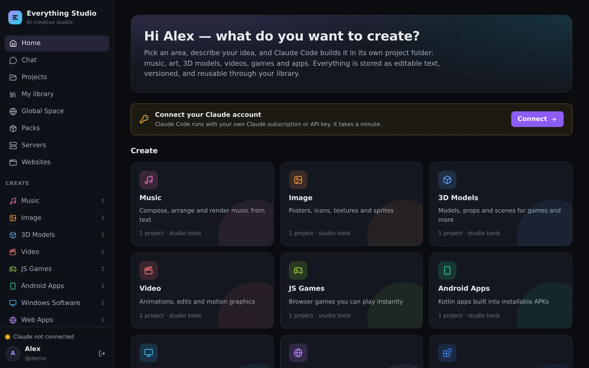
Ten areas, one workspace
Every area brings its own project template, its own instructions for the AI and the tools that fit — so “make a calm lo-fi loop” and “build a tally counter app” both just work.
Music
Songs written as text, played in a real DAW in the browser, rendered to WAV, MP3 and MIDI.
Images
Posters, icons, textures and pixel art — layers of shapes and text, rendered to PNG, JPG, WebP, ICO.
3D models
Props and scenes built to .glb, with a 3D editor to move, shape and texture them by hand.
Video
Timelines with clips, titles, transitions and a soundtrack — and stick-figure animation.
JS games
Browser games you play instantly in a sandboxed preview, with their own multiplayer server.
Android apps
Kotlin and Jetpack Compose, built into installable APKs with the Android SDK.
Windows software
.NET and C/C++ programs, cross-compiled to .exe files and installers.
Web apps
Sites and tools with a live preview — published on your own domains with HTTPS.
WordPress
A real WordPress per project: set up with one click, extended with your own plugins and themes.
Anything else
Scripts, research, documents — a blank workspace with every tool of the image.
Your server, your accounts, your files
The Studio is the workshop around the AI — it does not sell AI and does not see your subscription.
Run one container
Website, creative tools, toolchains and the database are in one image. Two Docker volumes hold everything you make. Nothing else to install.
Connect your own AI
Each person signs in to Claude Code with their own subscription or API key. Admins can add OpenAI Codex, Google Gemini, OpenCode or any ACP agent.
Create in projects
A project is a folder with its own chat, files, terminal, history and versions. The AI works inside it — in a Linux account of its own, apart from every other user.
Not just a chat window
The results are real files with real editors around them.
A DAW for songs that are text
Songs are YAML files the AI writes and you can read. Open one and it becomes a DAW — the engine that renders the final mix also plays every note you hear.
- Arrangement, piano roll, drum grid, mixer — every edit changes only the touched lines of the file
- Play and record with a MIDI keyboard, the on-screen keys or your computer keyboard
- Export WAV, MP3, stems and MIDI — or one zip with everything
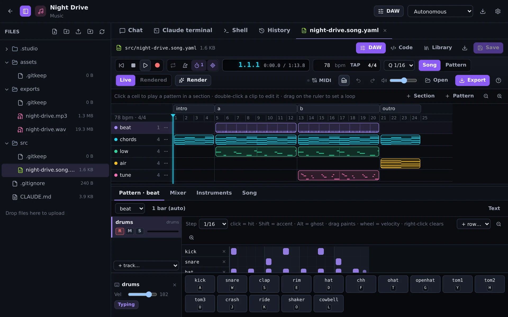
A 3D editor for scenes that are text
Models are scenes of shapes, materials and textures, built to .glb. Move, rotate and reshape objects in the view — the scene file stays the single source of truth.
- Organic shapes, booleans, modifiers, procedural and image textures
- Exports for games and printing: glb, obj, stl, ply
- The AI edits the same file — nothing gets out of sync
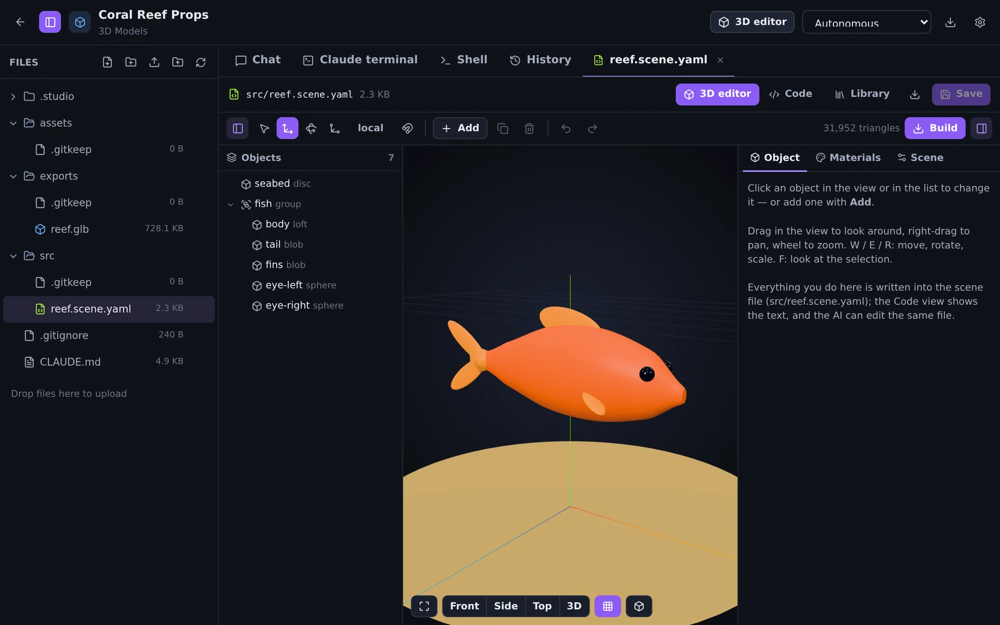
WordPress, with your own plugins and themes
A WordPress project is a real site: installed with one click, with its own database, its own PHP and its own address. Your code lives next to it, versioned, and runs in the site at once.
- Starters for plugins, settings pages, Gutenberg blocks, REST APIs, block and classic themes
- Manage plugins, themes, updates, the PHP log and database exports from one tab
- Export an installable zip for any other WordPress
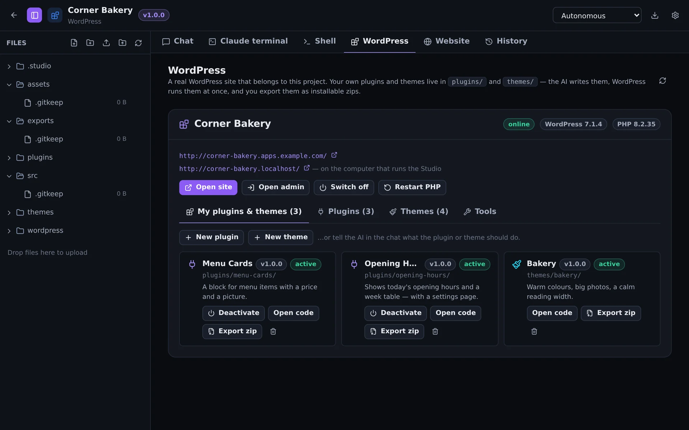
Versions you can release and go back to
Every AI turn is saved in the project's history. Versioning adds numbers on top — 1.0.0, 1.1.0 — with notes, a changelog, a git tag and a kept copy of the finished files.
- Patch, minor, major or your own number — in every area
- Download the files or the exports of any release, or restore it
- “Release version 1.2” works in the chat, too
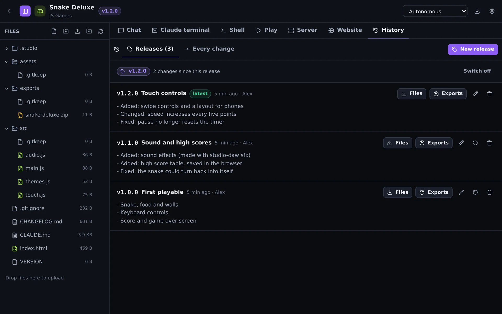
Online with your own domain and HTTPS
Web apps, games and WordPress sites go online straight from the Studio. Add a domain, point its DNS at the server — the certificate is requested and renewed by itself.
- One certificate per domain: Let's Encrypt, your own, or self-signed
- Backends included: projects run their own Node.js servers for multiplayer, saves and APIs
- No extra proxy needed — or put Caddy, nginx or a CDN in front
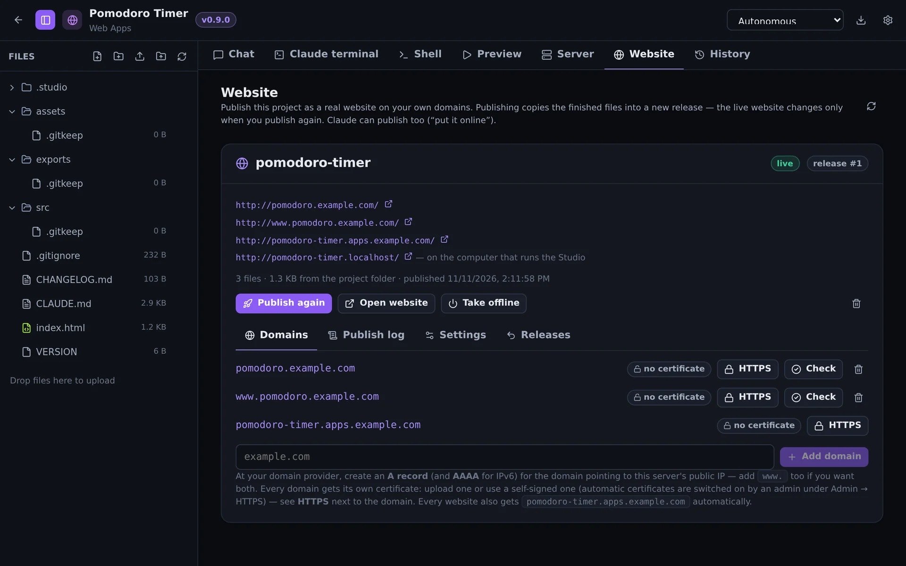
Around the Studio
Click a picture to see it large.
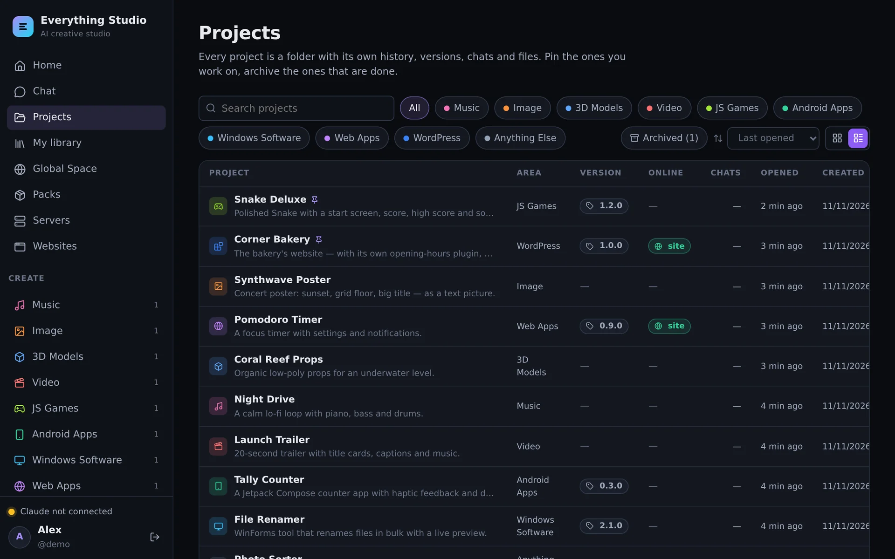

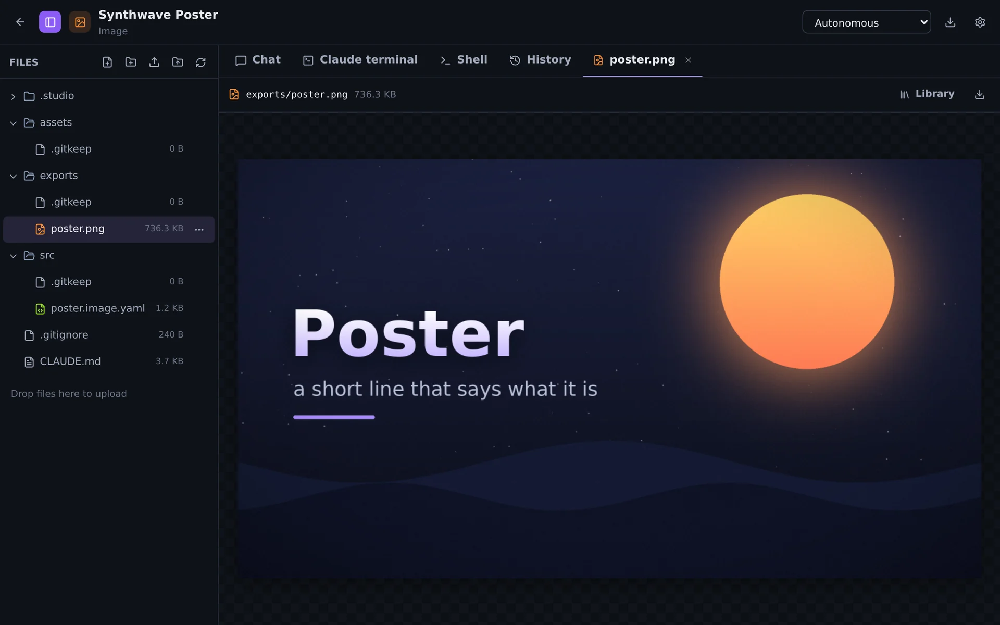
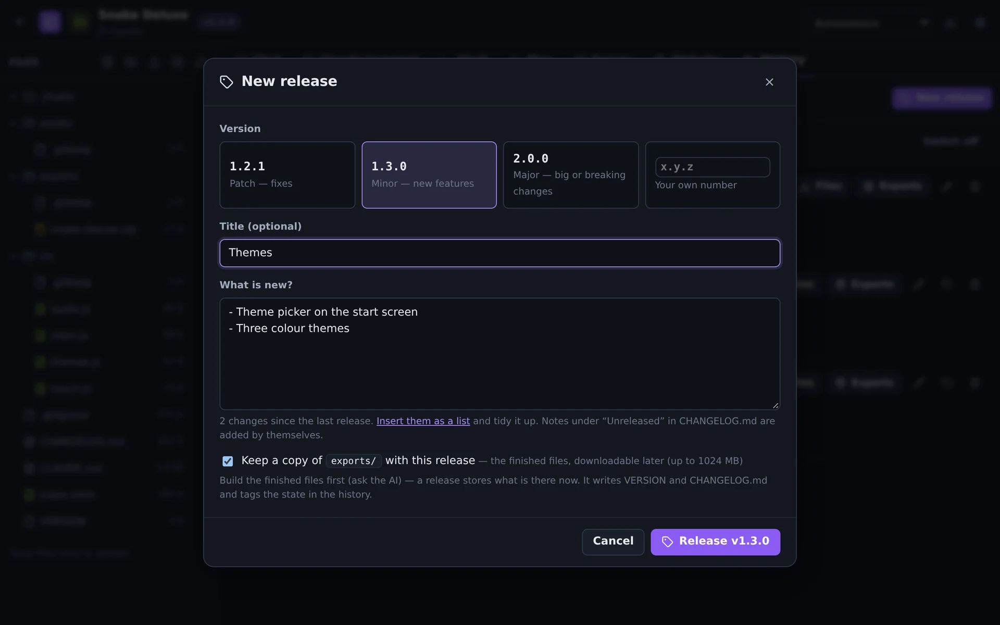
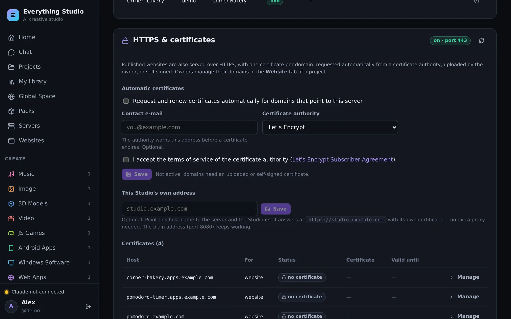
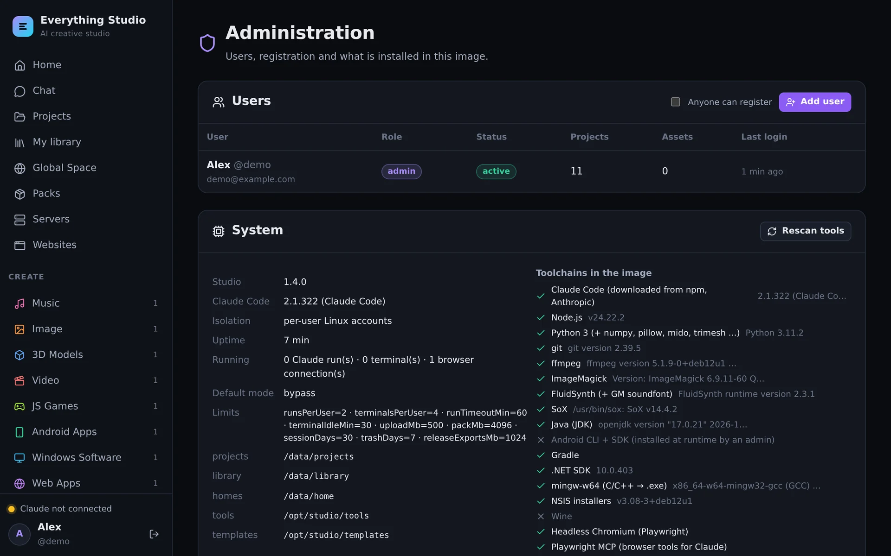
One image, a whole workshop
Text-driven creative software
Five tools of its own that turn text into media — and that the AI can extend with plugins.
Toolchains
Everything an app needs to be built and checked without leaving the container.
The AI you choose
Claude Code is built in (downloaded at first start). Others run over the open Agent Client Protocol.
Library and packs
Save what you make as reusable assets, share them with everyone on the Studio, and add packs of instruments, samples, models and materials.
Skills and instructions
Teach the AI how you work: reusable know-how it loads when a task matches, and standing instructions per area.
Made for more than one person
Every user is a Linux account of their own inside the container. Limits per user, an admin area, closed registration by default.
Running in a few minutes
You need Docker and about 15 GB of disk. The image is on Docker Hub, or build it yourself from the source.
git clone https://github.com/bugfishtm/ai-everything.git
cd ai-everything
docker compose pull # the image from Docker Hub (or: --build)
docker compose up -d
# open http://localhost:8080 — the first account is the admincp .env.server.example .env # domain, e-mail, admin account
docker compose up -d
# https://studio.example.com — certificates come by themselvesInstall
Requirements, first start, connecting an AI, updates and backups.
Read the install guide →Server & HTTPS
DNS, ports, Let's Encrypt, and running behind Caddy, nginx or a CDN.
Set up a server →Guide
Projects, the editors, versioning, websites, WordPress and the admin area.
Learn the Studio →Claude Code, the Android SDK and WordPress are not part of the image: each installation downloads them from their official sources — Claude Code at first start, the Android SDK once an admin accepted its license, WordPress when a site is set up. The image on Docker Hub: bugfishtm/ai-everything.